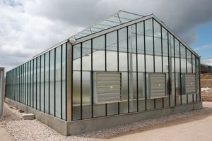
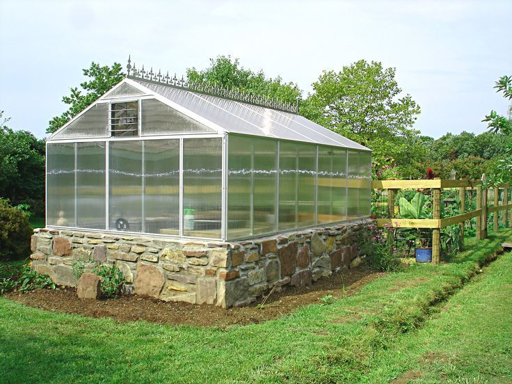

The even-span is the standard type and full-size structure, the two roof slopes are of equal pitch and width. This design is used for the greenhouse of small size, and it is constructed on level ground. It is attached to a house at one gable end. It can accommodate 2 or 3 rows of plant benches. The cost of an even-span greenhouse is more than the cost of a lean-to type, but it has greater flexibility in design and provides for more plants. Because of its size and greater amount of exposed glass area, the even-span will cost more to heat. The design has a better shape than a lean-to type for air circulation to maintain uniform temperatures during the winter heating season. A separate heating system is necessary unless the structure is very close to a heated building. It will house 2 side benches, 2 walks, and a wide center bench. Several single and multiple span types are available for use in various regions of India. For single span type the span in general, varies from 5 to 9 m, whereas the length is around 24 m. The height varies from 2.5 to 4.3 m.
An even-span greenhouse is a greenhouse that is constructed where the roof’s pitch is of both equal length and angle. This is in contrast to an uneven-span greenhouse.There are two basic types of even-span greenhouses: American (also called high profile) and Dutch Venlo (also called low profile). American even-span greenhouses feature one large roof per structure. The roof has overlapping panes.The Dutch even-span greenhouse boasts two small roofs per structure. The panes on the roof of a Dutch Venlo even-span greenhouse extend from the eave to the ridge. With the Dutch Venlo even-span greenhouse, there are no overlapping panes.